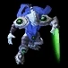
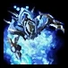
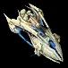

|
Дрон |
Строитель расы протоссов. Собирает газ и минералы. |
|
Зилот |
Юнит ближнего боя с возможностью рывка, что позволяет ему быстро сокращать дистанцию между собой и вражеским юнитом. |
|
Сталкер |
Похожий на драгуна юнит неразимов, способный мигать (телепортироваться на короткие расстояния) и наносить дальние атаки против воздушных и наземных юнитов. |
 |
Адепт |
Наземный юнит дальнего боя, вооруженный псионической способностью телепортироваться в близлежащие места для беспокойства. |
|
Часовой |
Ранее известный как разрушитель, а до этого - нуллификатор. Подразделение наземной поддержки. |
 |
Верховный тамплиер |
Физически хрупкий юнит с сильными псионными способностями. |
|  |
Темный тамплиер |
Воин-невидимка в постоянной маскировке. |
|  |
Архонт |
Архонт, созданный путем слияния двух юнитов храмовников, является мощным юнитом ближнего боя с очень прочным силовым щитом и мощной атакой, основанной на энергии. |
|
Наблюдатель |
Маскирующий воздушный блок, выполняющий функции детектора. |
 |
Призма искривления |
Ранее известная как фазовая призма, варп-призма представляет собой устройство двойного назначения, способное транспортировать юниты или создавать матричное поле деформации, такое как пилон. |
 |
Бессмертный |
Похожий на драгун шагоход с сильной защитой от мощных атак, но уязвимым для более слабых атак. |
|
Разрушитель |
Легкий наземный механизированный отряд поддержки, вооруженный энергетическими шипами, чтобы сеять хаос против наземных войск. |
 |
Колосс |
Большое четвероногое транспортное средство стреляет лазерами в виде брызг, хорошо подходящих для уничтожения скоплений более слабых юнитов.
Этот юнит также может преодолевать перепады высоты местности из-за своих длинных ног и будет казаться, что он перешагивает через уступы и
другие препятствия из-за системы инверсной кинематики. |
 |
Феникс |
Воздушный истребитель с антигравитационной способностью, которая поднимает в воздух наземные юниты. |
 |
Оракл |
Легкий псионический корабль поддержки и преследования. Может даровать обзор и беспокоить легкие юниты и рабочих своим пульсарным лучом. |
|
Излучатель пустоты |
Этот летающий юнит, ранее известный как варп-луч, наносит урон синим энергетическим лучом, который наносит больше урона, фокусируясь на той же цели.
Хорош против сильно бронированных целей, таких как здания, слаб против огня из стрелкового оружия. |
|
Ураган |
Крупный корабль дальнего радиуса действия, способный уничтожать массивные юниты. |
|  |
Авианосец |
Мощная авиационная единица. Авианосцы не имеют собственных атак, а создают перехватчики, чтобы сражаться за них. |
|
Ядро материнского корабля |
Базовая защитная единица, которая может перезаряжать строения, отзывать союзников и замедлять врагов. Может быть улучшен до материнского корабля. |
 |
Материнский корабль |
Мощный летающий юнит, для производства которого требуется большое количество ресурсов. Обладает мощными особыми способностями. |